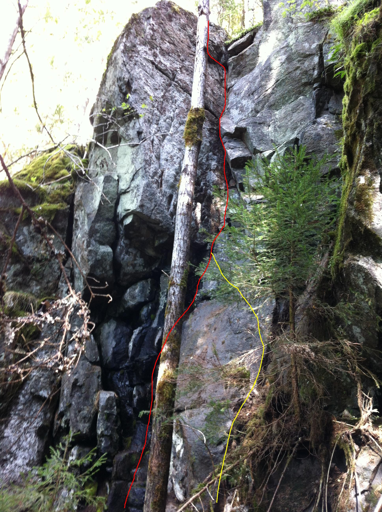

Lat: 60.3135 Long: 12.7641
Nyupptäckt klippa cirka 5 km norr om Östmark. Klippan ligger i västerläge med ganska tät skog direkt invid. Klippan har potential till cirka 10-15 tradleder och 10-20 sportleder. Det verkar finnas möjlighet för bouldering i anslutning till klippan. Klippans höjd ligger kring 6-12 meter och cirka 100 meter bred.
Kör E45 till Torsby och sväng av mot Östmark. Efter Östmarks kyrka sväng höger i korsningen vid ICA-butiken mot Kristinefors. Kör cirka 4-5 km till Metbäcken, sväng höger precis före skylten över en bro, parkera på vänster sida efter bron. Följ vägen till vänster längs åkerkanten tills en liten sommarlada dyker upp på höger sida, där finns en skogsbilväg på höger sida (kan vara svår att se på grund av buskage), följ denna genom skogen tills vägen kör en kraftig vänstersväng och går brant uppåt. Vid denna position välj att gå rakt fram genom skogen och du kommer fram till Klippan. <div style="width: 355; float: right; margin-left: 10px; padding: 3px; border: solid 1px #cccccc;">
<googlemap version="0.9" lat="60.3135" lon="12.7641" type="map"> </googlemap> </div>
<div style="float: right; margin-left: 10px;">
</div>
Tre tradlinjer är gjorda hittills, det krävs en del rensningsarbete innan det går att uttala sig till fullo hur klippans kvalitet är. Av de tre gjorda linjerna är två fina leder, dom skulle dock gärna varit lite längre. Klippan har vissa lösa partier samt något ställe som verkar svårtorkat. Klippan har 3-4 sektioner med varierande typ av klättring med ofta överhängande start. Några av lederna har fina spricklinjer som tilltalar en kilfantast i början av karriären.
Markägaren tycker att det är ok att klättring sker, frågor om att bulta har ännu inte ställts.
Mer information kommer.
200px|thumb
Kategori:sport
Kategori:trad
Kategori:vertikalt
Kategori:överhäng
kategori:Saknar skiss
kategori:Saknar vägbeskrivning
kategori:Saknar leder
kategori:Saknar koordinater
kategori:Saknar skrivarformatering
Category:Värmland
Copyright (C) Permission is granted to copy, distribute and/or modify this document under the terms of the GNU Free Documentation License, Version 1.3